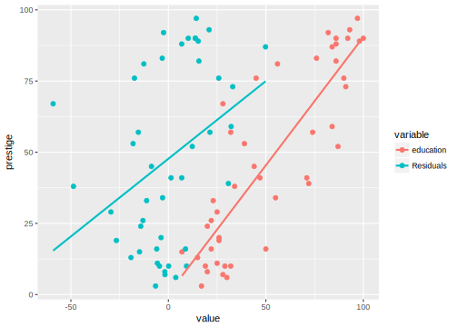

Chapter 2 Regression Anatomy
library("tidyverse")Summary: The coefficient of \(x\) in a multiple regression of \(y\) on \(x\) and \(z\) is equivalent to regressing \(y\) on the part of \(x\) not explained by \(z\) (the residuals of a regression of \(x\) on \(z\))
Regression anatomy is a term from Angrist and Pischke (2009) for the coefficient of variable \(x\) linear regression in a multiple regression is equivalent to the coefficient of a bivariate model using the residual from a regression of that variable regressed on all the other variables. Regression anatomy provides an answer to the how of control variables work.
Consider a regression with two predictors, \[ \Vec{y} = \beta_0 + \beta_1 \Vec{x}_1 + \beta_1 \Vec{x}_2 + u . \]
The OLS estimator of \(\beta\) is \[ (\beta_1, \beta_2) = \Vec{\beta} = (\Mat{X}'\Mat{X})^{-1} \Mat{X}' \Vec{y} \]
We can also recover the OLS estimate of \(\beta_1\) through two bivariate regressions and the following procedure.
\[ \beta_1 = \frac{\Cov(\Vec{y}, \tilde{\Vec{u}})}{\Var(\tilde{\Vec{u}})} . \] where \(\tilde{\Vec{u}}\) is the vector of residuals from the regression of \(\Vec{x}_1\) on \(\Vec{x}_2\), \[ \begin{aligned}[t] \Vec{x}_1 = \gamma_0 + \gamma_1 \Vec{x}_2 + v . \end{aligned} \] This can be extended to more than two two variables by repeating the above steps as many times as necessary.
This result is called the Frisch, Waugh, and Lovell (FWL) and discussed in Angrist and Pischke (2009). A complete proof can be found in advanced econometrics textbooks such as Davidson and MacKinnon (1993, p. 19–24) or Ruud (2000, p. 54–60).
Note:
- This is a mechanical property of OLS
- It does depend an underlying Data Generating Process (DGP).
- Nevertheless, useful for understanding how OLS can be used for causal inference
2.1 Example
For this example we will use the Duncan data from the car package.
data("Duncan", package = "carData")
Duncan <- rownames_to_column(Duncan, var = "occupation")Regress prestige on education and income using lm.
mod1 <- lm(prestige ~ education + income, data = Duncan)
mod1##
## Call:
## lm(formula = prestige ~ education + income, data = Duncan)
##
## Coefficients:
## (Intercept) education income
## -6.0647 0.5458 0.5987Now, use the regression anatomy methods to find the regression of education by regression anatomy methods:
Regress education on income:
mod2a <- lm(education ~ income, data = Duncan)
mod2a##
## Call:
## lm(formula = education ~ income, data = Duncan)
##
## Coefficients:
## (Intercept) income
## 15.6114 0.8824Store the residuals from that regression.
For convenience, use the augment function from the broom package.
Duncan <- modelr::add_residuals(Duncan, mod2a, var = "resid_education")Regress prestige on the residuals of education regressed on `
mod2b <- lm(prestige ~ resid_education, data = Duncan)
mod2b##
## Call:
## lm(formula = prestige ~ resid_education, data = Duncan)
##
## Coefficients:
## (Intercept) resid_education
## 47.6889 0.5458The coefficients of these two regressions are approximately equal. They are different due to floating point rounding errors.
coef(mod1)["education"] - coef(mod2b)["resid_education"]## education
## 1.110223e-16Q: Plot the regression lines
Duncan %>%
select(prestige, education, resid_education) %>%
gather(variable, value, -prestige) %>%
mutate(variable = dplyr::recode(variable, resid_education = "Residuals", education = "education")) %>%
ggplot(aes(x = value, y = prestige, colour = variable)) +
geom_point() +
geom_smooth(method = "lm", se = FALSE)
2.2 Variations
Let’s consider a couple of variations.
First, consider the case in which we regress the residuals from \(y\) regressed on \(x_2\) on the residuals of \(x_1\) regressed on \(x_2\).
- Regress \(y\) on \(x_2\). Let \(\tilde{y}\) be the residuals from that regression.
- Regress \(x_1\) on \(x_2\). Let \(\tilde{x}_1\) be the residuals from that regression.
- Regress \(\tilde{y}\) on \(\tilde{x}_1\); do not include an intercept.
Q: Will the coefficient of \(\tilde{x}_1\) be the same as in the first case?
Q: In the last stage why is there no intercept?
Return to the previous example using the Duncan occupational prestige data.
Regress prestige on income.
mod3 <- lm(prestige ~ income, data = Duncan)
mod3##
## Call:
## lm(formula = prestige ~ income, data = Duncan)
##
## Coefficients:
## (Intercept) income
## 2.457 1.080Add the residuals from this regression to Duncan dataset.
Duncan <- modelr::add_residuals(Duncan, mod3, var = "resid_prestige")Regress the residuals of from the regression of prestige on income on the residuals from the regression of income on education.
Do not include an intercept.
lm(resid_prestige ~ 0 + resid_education, data = Duncan)##
## Call:
## lm(formula = resid_prestige ~ 0 + resid_education, data = Duncan)
##
## Coefficients:
## resid_education
## 0.5458What happens if we don’t include the intercept?
lm(resid_prestige ~ resid_education, data = Duncan)##
## Call:
## lm(formula = resid_prestige ~ resid_education, data = Duncan)
##
## Coefficients:
## (Intercept) resid_education
## -8.904e-16 5.458e-01The intercept is estimate to be approximately zero - since the the regression line must go through \((\bar{y}, \bar{x})\) and residuals have mean 0.
Plot the residuals and their regression line against the original values and their regression line.
Subtract the mean from prestige and income so both linear regression lines go through the origin, which make it easier to compare them.
bind_rows(mutate(select(Duncan, occupation, prestige, education),
residuals = FALSE,
prestige = prestige - mean(prestige),
education = education - mean(education)),
mutate(select(Duncan, occupation, prestige = resid_prestige,
education = resid_education),
residuals = TRUE)) %>%
ggplot(aes(x = education, y = prestige, colour = residuals)) +
geom_point() +
geom_smooth(method = "lm", se = FALSE)
Second, consider the case in which we regress the residuals from \(y\) regressed on \(x_2\) on \(x_1\).
- Regress \(y\) on \(x_2\). Let \(\tilde{y}\) be the residuals from that regression.
- Regress \(\tilde{y}\) on \(x_1\).
Regress the residuals of the regression of prestige on income on education.
lm(resid_prestige ~ education, data = Duncan)##
## Call:
## lm(formula = resid_prestige ~ education, data = Duncan)
##
## Coefficients:
## (Intercept) education
## -13.6285 0.2593The coefficient on education is not the same as the multivariate OLS coefficient.
In this case, we have not “controlled” for anything.
The coefficient of education still includes the relationship between income and
education.
2.3 Questions
How does the variance of a variable compare to the variance of its residuals after regressing it on other control variables? What is the implication of that result for its standard error?
If two variables are co-linear what is the residual after the first stage? How does that explain why OLS cannot estimate a linear regression with collinear variables.
Suppose that two variables, \(x_1\) and \(x_2\) are highly correlated. In the first stage you regress \(x_1\) on \(x_2\). What do you expect the coefficient of \(x_2\) to be? What do you expect the residuals of this regression to be? How do you expect the coefficient of \(x_1\) on
Consider two highly correlated variables. What are the implications for this in the first stage and second stage of regression anatomy?
Confirm that regression anatomy also works for the coefficient of
incomein the previous regressions.Conduct regression anatomy for the coefficient of
educationinlm(prestige ~ education + type, data = Duncan)In this case we have a continuous variable (
education) and a discrete control (type). How do would you interpret the residuals of the regression ofeducationontype?Does the second stage of regression anatomy produce the correct standard errors? Informally, why do you think that is not the case. Retaining the regression anatomy procedure, generate correct standard errors using resampling.
In causal inference, informally “selection on observables” attempts to estimate a causal effect by comparing “similar” observations. How does and doesn’t linear regression do this?
Using the results of regression anatomy, how would you expect omitting control variables to effect the coefficients of a variable?
Recall that the slope of a linear regression coefficient can be represented as a weighted average of the outcome variable, \[ \hat{\beta} = \sum_{i = 1}^n w_i y_i \] where \[ w_i = \frac{(x_i - \bar{x})}{\sum_{i = 1} (x_i - \bar{x})^2} . \] Given regression anatomy, what are the weights of observations in multiple regression?
References
Angrist, Joshua D., and Jörn-Steffen Pischke. 2009. Mostly Harmless Econometrics: An Empiricist’s Companion. Pr.